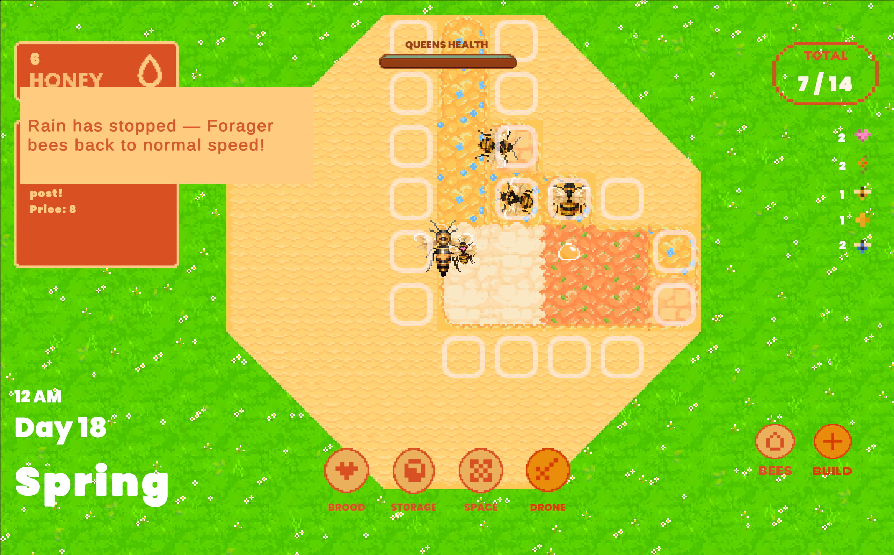
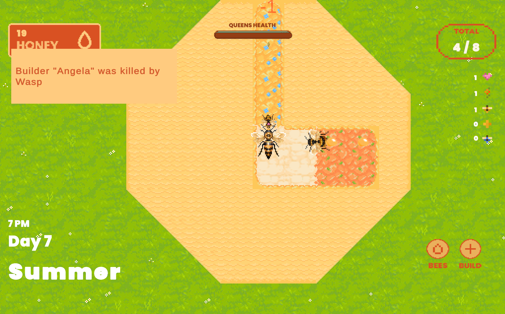
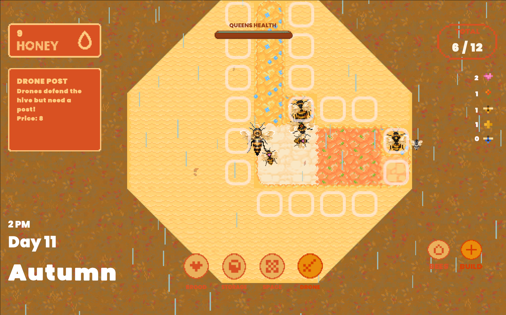
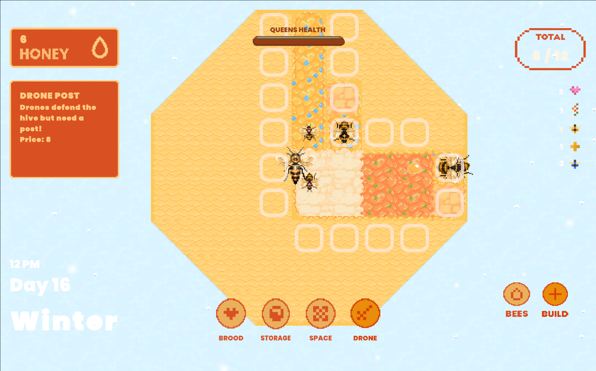

01
Managing a bee colony through changing seasons
Plan Bee is a 2D top-down strategy game where the player manages a growing bee colony and its resources.
The player must manage limited resources to buy new bee types with different functions and expand the hive with different zones to protect the colony and queen from threats like snow and wasps.
The project was developed in Unity and focuses on creating interconnected gameplay systems that make the colony feel like a living system.



